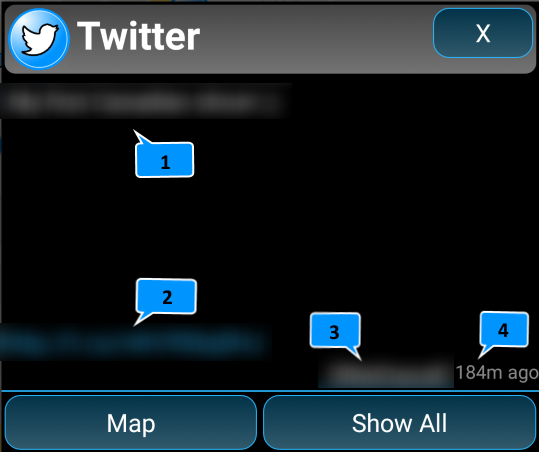
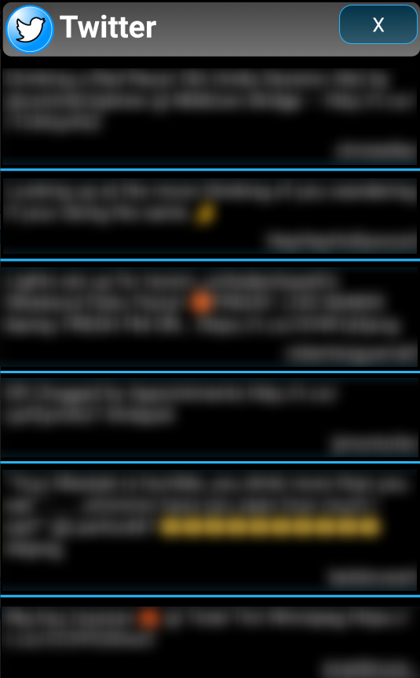

Twitter:
All locations for twitter feature have been randomize to protect the privacy of the posters. It should be taken as approximate only. The data can only be refreshed once every 15 minutes. To refresh the data, follow the steps below:
to deselect twitter feature
1: open feature drawer
2: de-select twitter feature
3: close feature drawer. This will remove twitter from the map.
to re-select
4: open feature drawer
5: select twitter feature
6: close feature drawer. this will map the new data from twitter.
The single tweet info window contains the following information:

1: poster's tweet
2: a tappable link if this tweet include attachment.
3: posters name
4: time elapsed since the tweet.
5: "Map" button, take you to the map where the tweet was created (approx location only).
6. "Show All" button, will display a scrollable list of previous tweets(Max 100). Tap on a tweet within the list to see its detail.
